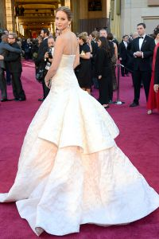
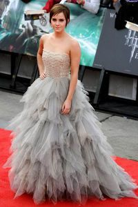

ანჯელინა ჯოლი კოსტიუმები არის ნებისმიერი ნიშანი. აქ გამოჩნდება საოცარ კაბაში ვერსაჩეს 2012 წლის ოქროს
გლობუსის პრეზენტაციაზე: პასტელი და წითელი აბრეშუმის კომბინაცია თავისი სამუშაოა.
ერთ-ერთი ულამაზესი გრძელი კაბელი "მეგაფ ფოქსის" ჩაცმულობითაა "ტრანსფორმერების" პრემიერაში.

ხშირად ვარსკვლავებს ხედავთ ყველაზე ლამაზი ბურთი კაბები. ერთი მათგანი ჯენიფერ ლოურენსს ოსკარზე 2013 წელს
ატარებს.

სიაში ყველაზე ლამაზი კაბები ხშირად იღებს ემა უოტსონის ეკიპაჟს ჰარი პოტერის მეორე ნაწილში.